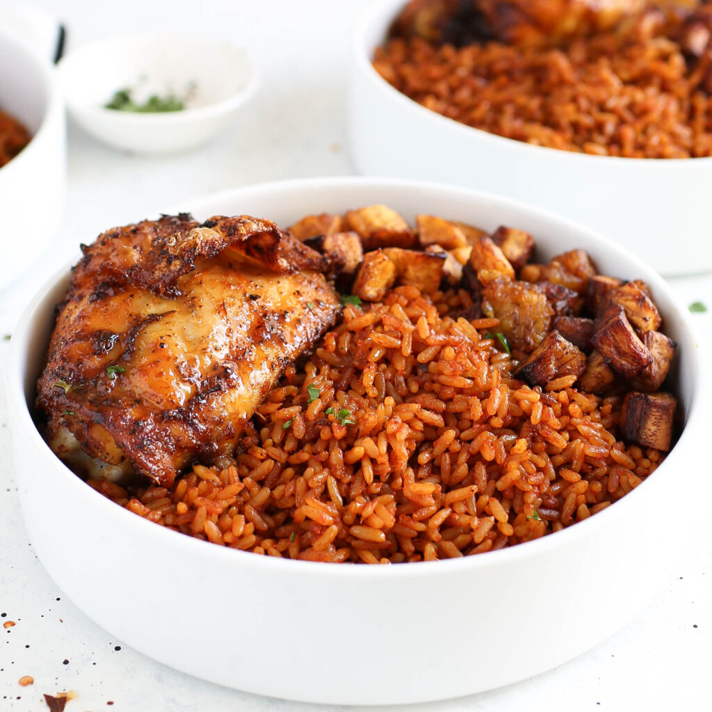
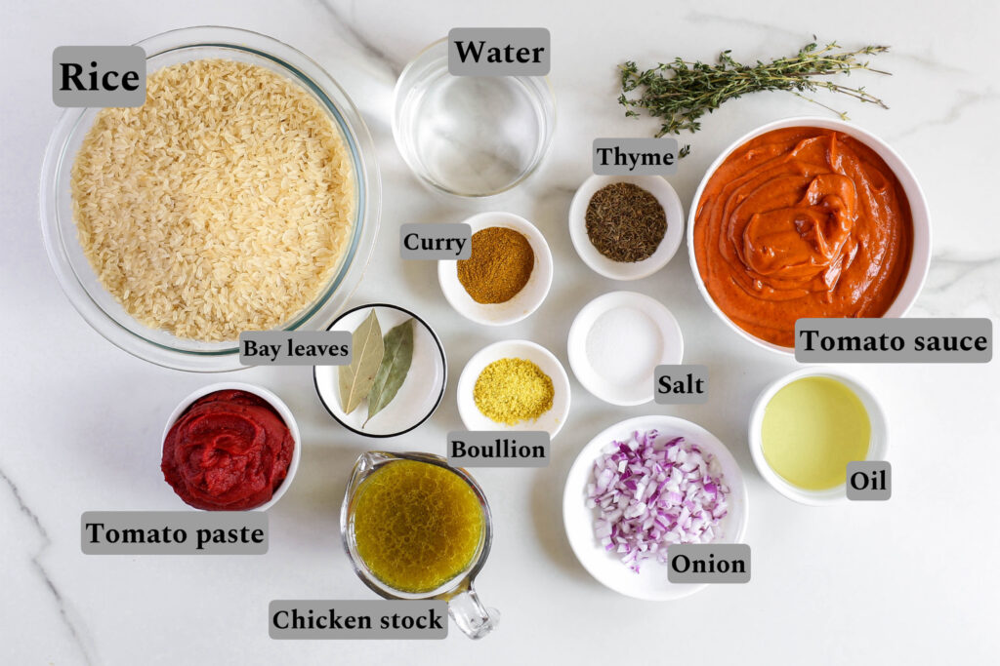
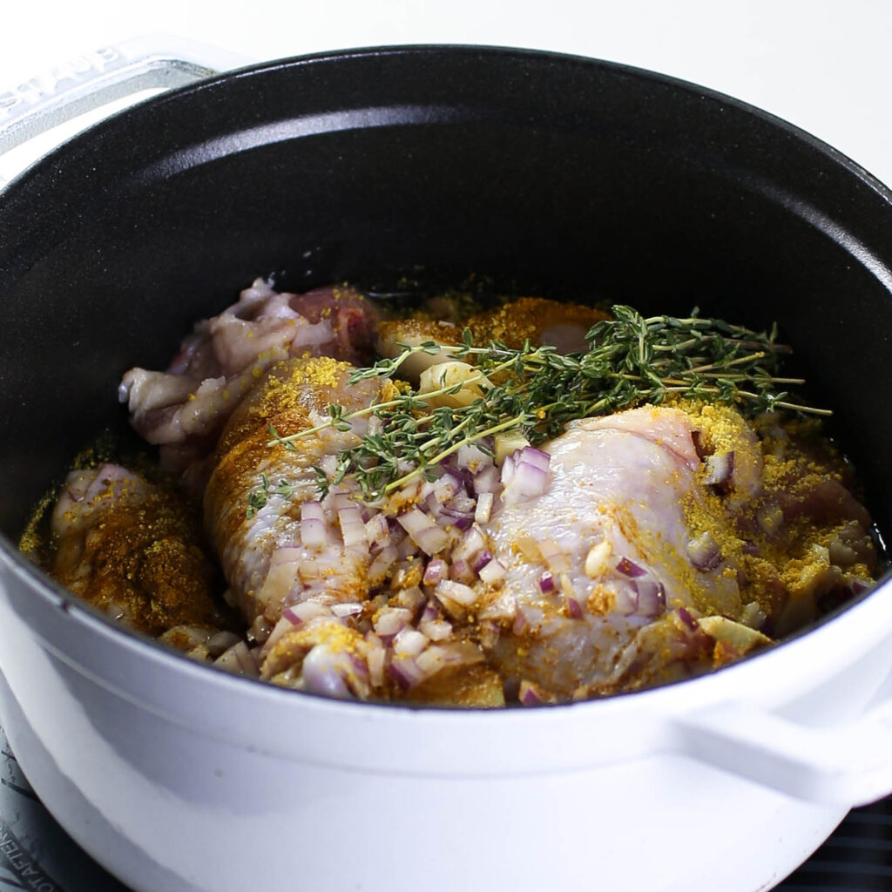
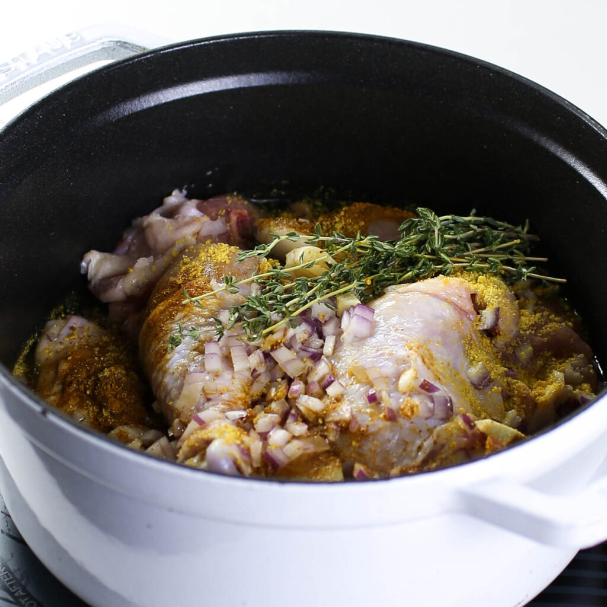
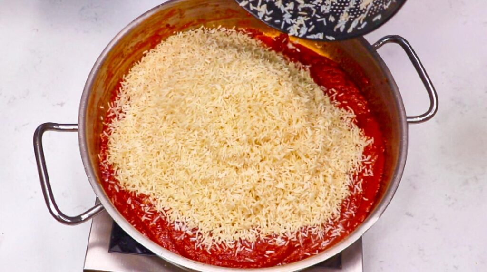
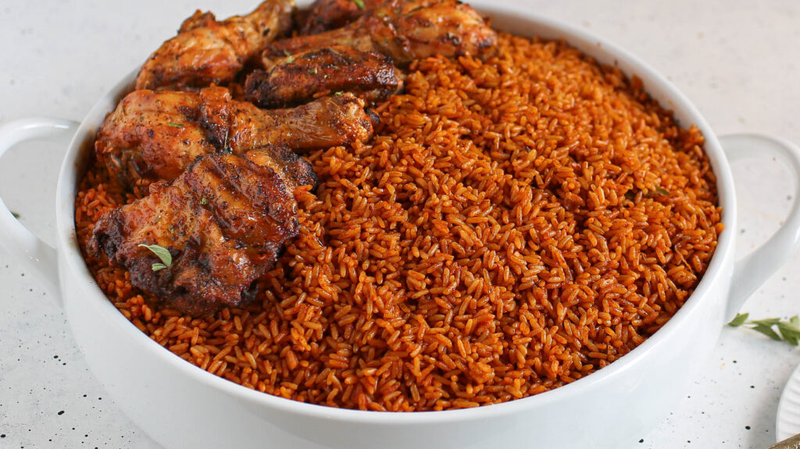
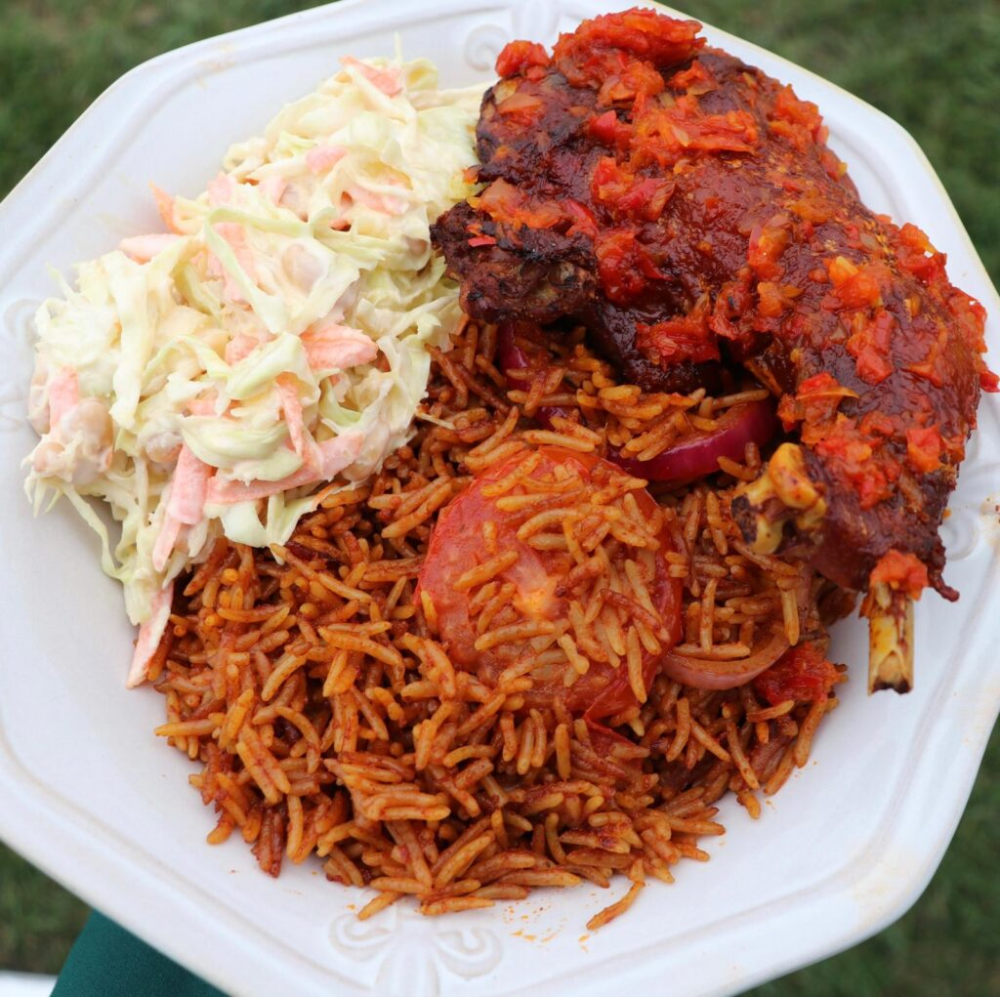
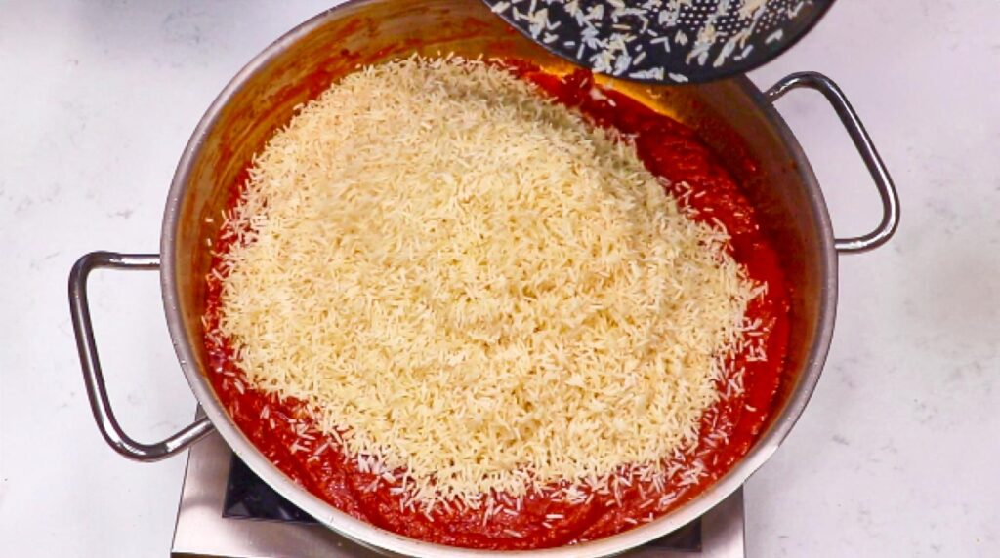
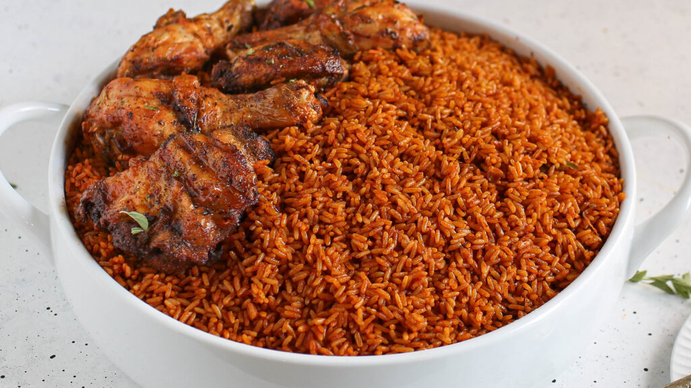
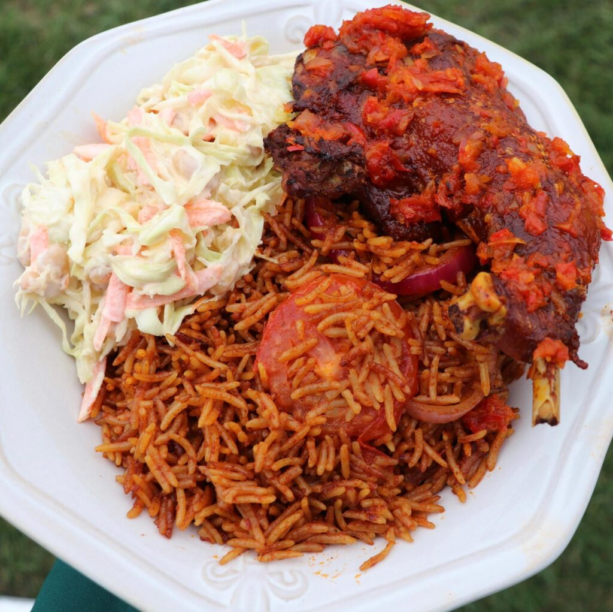

About

History and Origin
Jollof Rice
It is a popular dish in many West African countries,
including Nigeria, Ghana, Senegal, and Gambia.
Each country has its own variation of the dish,
but the basic ingredients remain the same.

Recipe
- Rice
- Vegetable oil
- Onion, chopped
- Garlic, minced
- Tomatoes
- Tomato paste
- Chicken or Meat broth
- Stock cubes
- Thyme
- Curry powder
- Bell pepper
- Salt and Pepper
Instructions on how to cook Jollof Rice
- Boil chicken with onion, garlic salt, seasoning cube, thyme and curry.
- While the meat is boiling, blend tomatoes, bell peppers, onion until smooth.
- Transfer pepper mix to a wide pot and boil for about (10-15 minutes)
- When meat is cooked, separate from stock, air-fry until golden brown
- Wash rice multiple times until water runs clear and set aside.
- In a large wide pot, heat up vegetables oil or oil of choice.
- Fry chopped onion until onion is translucent and fragrant.
- Add tomato paste and fry tomato paste for about 15 minutes.
- Boiled down pepper mix,season with salt, curry, and thyme.
- Fry for an additional 10 minutes. Add meat stock or water. Stir.
- Add washed rice, cover with foil and allow to cook for about 20 minutes.
- After 20 minutes your rice should be ready.
- Serve with chicken, fried plantain and salad.
- Enjoy!
.jpg) 


 




